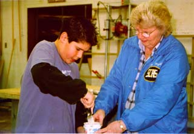

SJAA
Ephemeris
|
SJAA Ephemeris |
Striking Sparks with kidsJane Houston |
Adrian Zelaya is a remarkable young man. He's twelve years old and in the seventh grade. He has a really cool haircut. He earns an allowance each week. On the outside he is like any other twelve year old. What makes Adrian remarkable is what he did with his allowance this year. I'll have to go back two years first to set the scene for Adrian's tale.
When Adrian was in the fifth grade and ten years old he wrote an essay about why he should be given a telescope. His essay was one of dozens submitted to the Sonoma County Astronomical Society's (SCAS) annual Striking Sparks Telescope award program. All Sonoma County, California school kids from elementary grades through high school are eligible for this program. His essay was selected by a jury of club directors and other dignitaries. He was awarded one of the ten Striking Sparks telescopes in 1997. His teacher, Mr. Nolan and his parents joined him on an April Saturday that year to partake in the award ceremony. One touching part of his essay told about how he could remember being two years old when his dad put glow-in-the-dark stars on his bedroom ceiling. He remembered looking at the stars on the ceiling and at the stars his dad showed him outside at night. The essay contest involves the student and his or her teacher and cultivates not only a love of visual astronomy, but a respect for education, creative writing, mentoring and teamwork.
Each year ten 5-1/2 inch mirror blanks are lovingly ground and polished to a shiny F7 focal ratio by ten different club members. Tubes and mounts are constructed in a local high school wood shop by other members.
The funds to sponsor the telescopes are solicited from local businesses, charitable groups, astronomy clubs, and individuals. Some are sponsored in the memory of a departed family member who loved sharing telescopes with kids. One telescope each year is sponsored by the Young Astronomers, a kids club within the SCAS club comprised of Striking Sparks telescope awardees from past years. One scope honors the memory of the founding father of the Striking Sparks program, Bob Ferguson.
It costs $175 to sponsor one of the little Striking Sparks scopes - and this money buys the plywood, tubes, focusers, spiders, mirror cells, primary and secondary mirrors and other materials needed to build scopes. In addition each student receives a telrad, red flashlight and an eyepieces. In their bag of goodies is a sky chart and a planisphere. Each awardee is also given a one year membership in the Young Astronomers club and gets a copy of their monthly newsletter. Material such as ground boards, teflon scraps and mirror aluminizing are donated by local businesses. The club treasurer bargains all year with astronomy businesses for good deals or freebies to keep the cost of the scopes down.
Last month at the SCAS general meeting Mario Zelaya stood up to make an announcement. He told the group that his son Adrian had saved $175 from his allowance to sponsor one of the Striking Sparks telescopes. I can't begin to describe the beautiful symphony of applause and exclamations which accompanied Mario's announcement.
A few weeks later I got to meet twelve year old Adrian. He and his dad showed up to help at the first Striking Sparks Saturday work party, held during a torrential rainstorm at the Cloverdale High School wood shop. He not only donated his allowance to sponsor a telescope, he wanted to help with the construction by donating his time! While a panel saw was whirring out the rocker box pieces, and a jig saw was cutting and rounding cradle boards and other pieces, and a nail gun was rat-a-tat-tatting the pieces together, Adrian joined the twelve adults with a sander, a putty knife and a quiet determination. "It's really neat to see these being made", he told us.
"Why did you do it?" I asked Adrian? "I usually just spend my allowance on stuff, and I wanted to spend it on something important", he replied, during a break from covering nail holes with wood putty. "This is the only program like this in the whole world", he told me he had heard. Mario, the dad told me "This is where we got together - the two of us".
The Striking Sparks Telescope award program and the Young Astronomers club are examples of astronomy club programs which encourage young people to love the sky and love astronomy. There are now about 100 of these little telescopes out there striking sparks with kids in Sonoma County California. On April 17, 1999 at the Proctor Terrace Elementary School in Santa Rosa California, ten white reflector telescopes with shiny bright new 5-1/2 inch mirrors, will be arranged in a semi circle on the stage. Near each base will be a basket of flowers and a bag of astro goodies for each awardee. A few hours later, one by one, ten students will be escorted to the stage by their teacher and their family members to receive their telescope and begin what we hope will be a lifelong journey by starlight to worlds we can only imagine.
Meanwhile, young Adrian is busy helping build this year's crop of Striking Sparks scopes, and enjoying views of Saturn and the Moon (his favorite objects) through his telescope. Bob Ferguson would be proud!
- Jane Houston, Striking Sparks program mirror grinder and putty knife expert
|  |
| Jane Houston; last updated: February 05, 2002 | Prev Next |